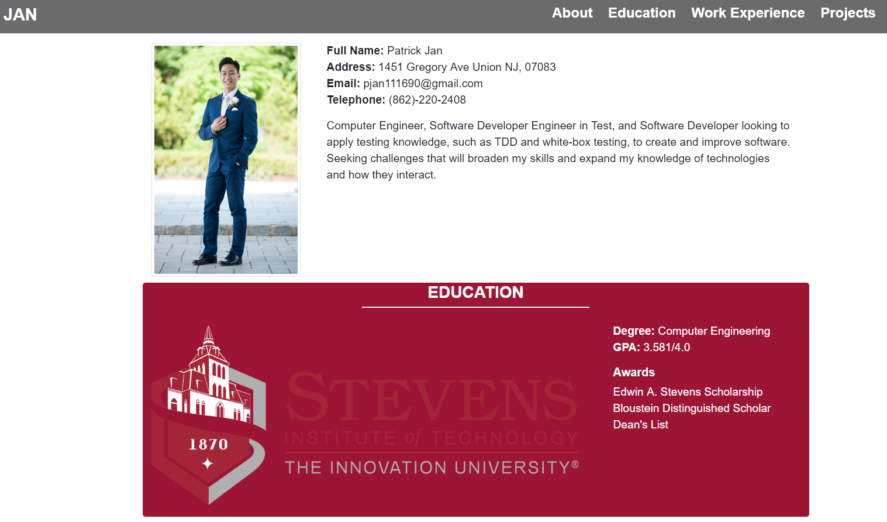

- Full Name: Patrick Jan
- Address: 1451 Gregory Ave Union NJ, 07083
- Email: pjan111690@gmail.com
- Telephone: (862)-220-2408
Computer Engineer, Software Developer Engineer in Test, and Software Developer looking to apply testing knowledge, such as TDD and white-box testing, to create and improve software. Seeking challenges that will broaden my skills and expand my knowledge of technologies and how they interact.
Education
- Degree: Computer Engineering
- GPA: 3.581/4.0
Awards
- Edwin A. Stevens Scholarship
- Bloustein Distinguished Scholar
- Dean's List
Work Experience
- Analyzed, corrected, and optimized nightly test scripts to meet a 98% satisfaction rating
- Built and employed a Galen UI layout testing framework for updated UI initiative
- Participated in Clean the Six effort to optimize test script execution
- Created test plans using a pairwise testing tools and test condition trackers
- Created, maintained, and executed hundreds of test plans in SPIRA and TestRail to ensure 95% or higher quality standard
- Converted test scenarios to Selenium WebDriver automation scripts for repeatable test coverage
- Detailed and verified bug and improvement tickets in JIRA
- Utilized the SCRUM Agile process to prevent support issues when developing and designing new features
- Analyzed process procedures to enact improvements to gain efficiency and productivity
- Designed email, chat, and survey forms for call center distribution
- Managed data tables for the Customer Relationship Management (CRM) initiative
- Created test scripts using CSV files to gather phone answering system statistics
- Resolved hundreds of customer order issues in SAP
- Facilitated integration testing and go-live implementation of the global watch repair service project by training end-users and giving user feedback
- Trained global power users in the new watch repair service portal and SAP system for smooth transition
- Debugged issues in watch repair service system to achieve speedy resolutions
- Tested new functionality and problem fixes in SAP by completing and creating test case scenarios
- Ensured test phase progression by documenting and maintaining logs for issues during project integration
- Developed custom applications in SAP using ABAP and webDynpro
- Created applications in Product Life-cycle Management, Product Development Management, Document Management System, and Audit systems within SAP using ABAP and SQL
- Detailed test documents to guide testers and ensure proper results by documenting application changes
- Debugged problems and generated enhancements to existing applications written in ABAP
- Adjusted documentation templates using SAPscript and SMARTform
Projects
- Java
- JavaScript
- SQL
- ABAP
Personal Portfolio
This is a personal portfolio to showcase my educational background, work experience, projects, and hobbies. The portfolio was created using HTML, CSS, JavaScript, along with the Bootstrap and Font Awesome libraries.
Super Fight
I took one of my favorite card games and converted it to a mobile game. Each player gets a character card and random "ability" cards. You pit your characters against others and see which one is the winner.
Temp
I took one of my favorite card games and converted it to a mobile game. Each player gets a character card and random "ability" cards. You pit your characters against others and see which one is the winner.
Hobbies
Health and Fitness
- Basketball:
- Volleyball:
- Tennis:
Arts and Leisure
- Photography:
- Ukulele:
Video Games
- Super Smash Bros.: